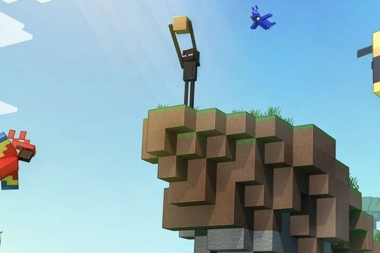

Apertura Alpha
SCO abre sus puertas a su versión Alpha. Esta versión trae consigo una gran tragedia en el pueblo de los inicios. Ha ocurrido que Skeletron King ha secuestrado y dominado la catedral y ha creado un sistema de laberintos y impedimentos para que los pueblerinos no puedan honrar la muerte de los Constructores y Familiares que murieron en la construcción de esta bella ciudad que verán. Para lograr salvar la catedral tendrán que hablar con Arthur para que les diga que es lo que tienen que hacer.